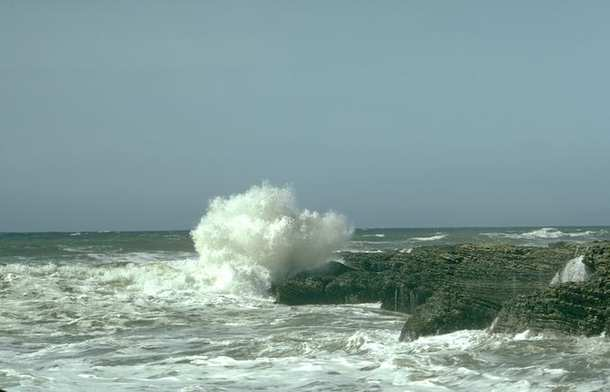
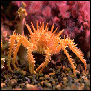
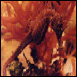
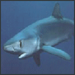
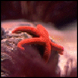

Oceans cover more than two-thirds of the Earth's surface. The greatest variety of life is found in the oceans. Most ocean animals live in the warm, shallow waters surrounding the continents and islands. Yet, life can even be found deep in the ocean where light never reaches. Some of the different kinds of animals that live in the ocean are crabs, seahorses, sharks, and starfish.

A crab walks sideways instead of straight ahead, like most animals. A hard shell that covers its body helps protect it. However, in order to grow, a crab must shed its shell. After shedding, it is soft-bodied and very vulnerable. Once its new shell is hard and strong, the crab is ready to face the world again.

A seahorse swims in an upright position. Unlike most animals, the male seahorse gives birth. The male has a pouch on its stomach in which the female places her eggs. After hatching, the young seahorses stay inside the pouch for ten days. A male seahorse can give birth to as many as 600 young at one time.

Most sharks eat fish, sea lions, sea birds, and dolphins. They are very efficient hunters and have been nicknamed "eating machines" and "super predators." They use a combination of sight, smell, and a form of sonar to hunt their prey.

There are many types of starfish, also known as "sea stars," in the ocean. They can have as few as five arms or as many as forty. If a starfish loses an arm, it will grow a new one. The starfish's mouth is located on the underside of its body.